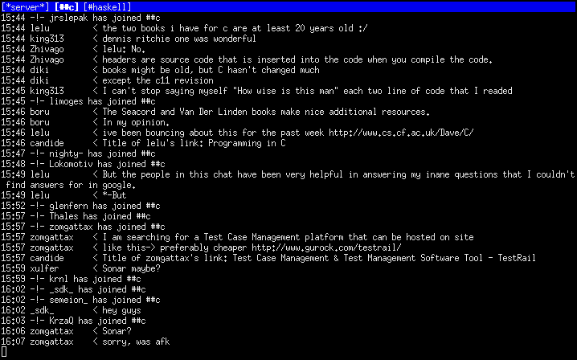

https://c9x.me/irc/ is boner-inducing to be honest
Evil_Bob
Feeling the need to have a trivial IRC client usable in a tmux session on remote servers I wrote irc.c. This client was designed with simplicity in mind, yet it is complete enough to fulfill my usability constraints.
The suckless client sic
provides a good tiny irc client but it is a bit too hardcore
to use it on a daily basis. First, sic input is driven by a
standard fgets and hence, no line editing goodies
are supported except the ones provided by the tty kernel driver (^U
^H and friends). Second, sic will mess up the output if a
message appears while typing a line. Third, sic does not
multiplex channels (but it is a feature!). Finally, I wanted my
client to provide infinite scrollback.
The irc.c client is, as its name implies, a single C file which implements a usable IRC client. The display mechanism uses any standard curses library. It should work with any curses implementation (I tested on Linux and BSD).
The client currently features
Keeping feature set as small as possible and, yet, remaining usable was the main challenge when designing this client. Keeping it simple makes it safe and easy to understand and hack.

git clone git://c9x.me/irc.git
It used to be simple to compile but lately I had to add a bunch of flags to force various OSes to compile it. After cloning, you should be able to simply run
make
If the linker complains, you might want to change
the curses library flag to -lcurses. On
Debian/Ubuntu, some warnings might be displayed about
setcchar and wadd_wch, they are
harmless.
I put this program in public domain, do whatever you want with it. Please let me know if by some unfotunate events, this became your IRC client.